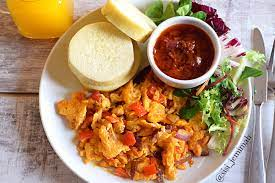
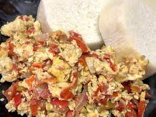
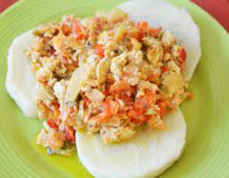
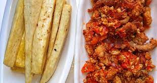

MY FAVOURITE MEAL😋
Yam and Egg sauce as my best meal
Let's talk about preparing my sumptuous meal!!!😋😋
| For Yam | Egg sauce | ||||
|---|---|---|---|---|---|
| Tuber of Yam | 4 fresh eggs or more | ||||
| Salt to taste | Fresh tomatoes | ||||
| Fresh scotch pepper(about half a bowl full) | |||||
| Some fresh onions | |||||
| Crayfish, spices,some bouillon cubes and salt to taste | |||||
| Groundnut oil | |||||
HOW TO PREPARE YAM AND EGG SAUCE
- Peel the yam and cut into smaller bits.
- After that, put them into a clean cooking pot, add some water to it and some salt to taste.
- Then, put on fire to cook for about 20-30 mins.
- On the other hand, take your fresh eggs. Rinse them and break them into a bowl and whisk till you achieve a good consistency.
- Cut your onions, scotch peppers ans tomatoes into little bits unto a bowl.
- Add your spices, bouillon cubes and salt to taste to your whisked eggs and also to the sliced pepper and tomatoes.
- Take a frying pan, add some groundnut oil to it and allow to heat up.
- When it is heated enough, fry your onions ,pepper,tomatoes and even your crayfish for a minute or two.
- Then pour in your whisked eggs and stir.
- After 5-10 mins, remove your egg sauce from the pan as it is ready.
- Don't forget to check on the yam you are boiling. Remove it wwhen it is done.
- Serve on a dish and enjoy!
Do you want to see how sumptuous it looks?Take a glimpse👇



